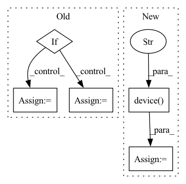

Pattern ID :27365

Before Change
model, task = model_w_task
local_rank = int(os.getenv("LOCAL_RANK", "0"))
if "gpt-j-6B" in model and dtype == torch.half:
_model = AutoModelForCausalLM.from_pretrained(model,
revision="float16",
torch_dtype=torch.float16)
tokenizer = AutoTokenizer.from_pretrained(model)
_model.half()
pipe = pipeline(
task,
After Change
pipe.model.half()
// Switch device to GPU after converting to half
device = torch.device(f"cuda:{local_rank}")
pipe.device = device
pipe.model.to(device)
// Warm-up queries for perf measurement
In pattern: SUPERPATTERN
Frequency: 3
Non-data size: 5
Instances
Fragment ID: 81374713
Project Name: microsoft/deepspeed
Commit Name: 34fb6d198056fe169d6fca6d6c45f66d0264fe08
Time: 2022-10-17
Author: michaelwyatt@microsoft.com
File Name: tests/unit/inference/test_inference.py
M Class Name: TestModelTask
N Class Name: TestModelTask
M Method Name: test(8)
N Method Name: test(8)
M Parent Class: DistributedTest
N Parent Class: DistributedTest
M File Name: tests/unit/inference/test_inference.py
N File Name: tests/unit/inference/test_inference.py
M Start Line: 228
M End Line: 249
N Start Line: 232
N End Line: 239
'>
Before Change
output_idx = output_idx.index(name)
input_idx = partitions_config[dest]
if isinstance(input_idx, dict):
input_idx = input_idx["inputs"].index(name)
else:
input_idx = input_idx.index(name)
if policy is CommPolicy.P2P:
tag_or_group = tag
After Change
elif rank == input_rank:
device = torch.device("cuda:0")
elif rank == output_rank:
device = torch.device(f"cuda:{input_rank-1}")
else:
device = torch.device(f"cuda:{rank}")
buffer = torch.empty(device=device, **info)
'>
Fragment ID: 81374680
Project Name: saareliad/ftpipe
Commit Name: e685cf91e77538afa5f9c8b6ea3a61fcdcd96644
Time: 2019-12-09
Author: alondej@gmail.com
File Name: communication/GeneralCommHandler.py
M Class Name: AnonimousClass
N Class Name: AnonimousClass
M Method Name: createCommParams(5)
N Method Name: createCommParams(5)
M Parent Class:
N Parent Class:
M File Name: communication/GeneralCommHandler.py
N File Name: communication/GeneralCommHandler.py
M Start Line: 179
M End Line: 225
N Start Line: 171
N End Line: 229
'>
Before Change
// set the gpu or cpu device
device_list = str(device_id).strip().lower().replace("cuda:", "")
cpu = device_list == "cpu"
if cpu:
os.environ["CUDA_VISIBLE_DEVICES"] = "-1" // force torch.cuda.is_available() = False
elif device_list: // non-cpu device requested
os.environ["CUDA_VISIBLE_DEVICES"] = device_list // set environment variable
assert torch.cuda.is_available(), f"CUDA unavailable, invalid device {device_list} requested" // check availability
device = torch.device("cuda" if torch.cuda.is_available() == True else "cpu")
After Change
if rank == -1:
device = torch.device("cuda:{}".format(device_id) if torch.cuda.is_available() == True else "cpu")
else:
device = torch.device("cuda:0")
else:
new_output_path = None
init_logger(new_output_path,rank=rank)
device = torch.device("cuda:0")
'>
Fragment ID: 81374674
Project Name: cognlp/cogktr
Commit Name: 0a56c91550b00f2c15b8b66262246dfee75b0cb1
Time: 2022-06-06
Author: 1208314139@qq.com
File Name: cogktr/utils/general_utils.py
M Class Name: AnonimousClass
N Class Name: AnonimousClass
M Method Name: init_cogktr(5)
N Method Name: init_cogktr(4)
M Parent Class:
N Parent Class:
M File Name: cogktr/utils/general_utils.py
N File Name: cogktr/utils/general_utils.py
M Start Line: 11
M End Line: 40
N Start Line: 28
N End Line: 66